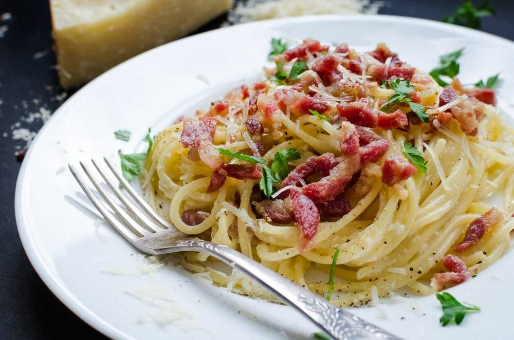

Chicken Carbonara Recipe

Description
Creamy chicken carbonara is inspired by a classic Italian (Roman) pasta dish made
with bacon or pancetta, whisked egg, and hard cheese. Bacon, egg, and cheese me all
day, baby. Carbonara sauce is an egg-based white sauce featuring Parmesan cheese,
black pepper, fresh herbs, and sometimes cream. It's creamy, delicious, date-night
worthy, and will rock your world.
Ingredients
Carbonara Sauce
- 4 Eggs
- 3/4 cup grated parmesan cheese/li>
- Salt
- Pepper
- 1/4 cup chopped fresh basil (plus more for garnish)
Chicken Carbonara
- 2 Boneless, skinless chicken breast
- 4 strips of thick cut bacon
- 12-14 ounces linguine
- 2 cloves garlic, minced
Steps
- Bring a large pot of salted water to a boil and cook linguine al dente.
Reserve 1/2 cup of pasta water before straining.
- Combine eggs, cream, Parmesan cheese, basil, and a pinch of salt and pepper
in a medium bowl. Whisk thoroughly and set aside.
- Meanwhile, cook bacon in a cast iron skillet on medium heat until fully cooked,
remove from the skillet and place on a paper towel lined plate to drain.
Keep 1-2 tablespoons of bacon grease in the skillet and discard the rest.
- Add minced garlic and sliced chicken to the skillet. Season with salt and pepper
and cook until chicken is fully cooked through, about 5-7 minutes.
- Return bacon to the skillet, add the warm linguine and toss with chicken and bacon.
Turn the burner down to low and let the skillet cool for 2-3 minutes. If the
skillet is too hot you run the risk of scrambling the eggs.
- Add egg mixture to the skillet and toss with the pasta until fully incorporated.
Stir in 2-3 tablespoons of reserved pasta water until creamy.
Serve immediately with extra Parmesan cheese and garnish with fresh basil.